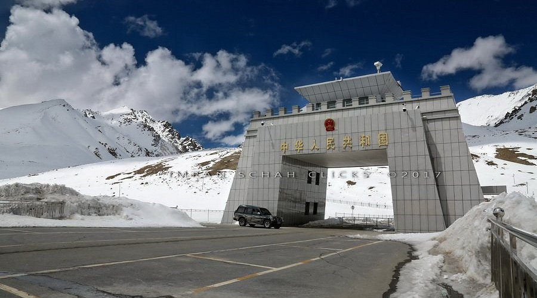
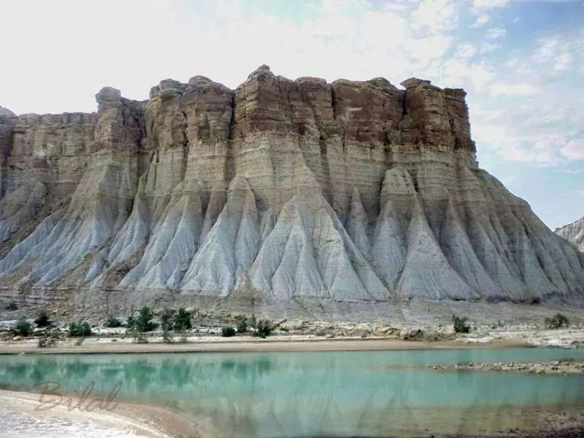

DEOSAI NATIONAL PARK
Deosai National Park is one of the most beautiful and unique natural areas in Pakistan. Located between Skardu and Astore in the Gilgit-Baltistan region, it is famous for its vast high-altitude plains and breathtaking mountain scenery. Often called the “Land of Giants,” Deosai is one of the highest plateaus in the world, sitting at an average elevation of about 4,000 meters above sea level.

KHUNJERAB NAITONAL PARK
Khunjerab National Park is one of the most important wildlife reserves in northern Pakistan. It is located in the Karakoram mountain range near the border with China, close to the famous Khunjerab Pass. The park is known for its high mountains, cold climate, and stunning natural scenery. Because of its high altitude, the area is mostly covered with rocky landscapes, grasslands, and snow during winter.

HINGOL NATIONAL PARK
Hingol National Park is the largest national park in Pakistan and is located in the Balochistan province along the coast of the Arabian Sea. The park is famous for its unique desert landscapes, mountains, coastal areas, and unusual rock formations. One of its most well-known natural attractions is the Princess of Hope rock formation, which naturally resembles a human figure.